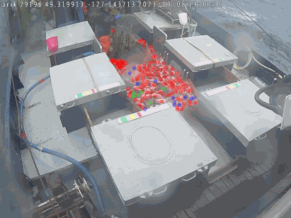

Exploring AI for Fisheries in Depth: Challenges and Opportunities
Wednesday, October 5 2023 9:00am
Nusantara I, Westin Nusa Dua, Bali
|
|

|

|
Overview
Artificial intelligence (AI) is a hot topic of 2023. However, while many people are interested in
applying AI across various industries, many of these implementations are missing the mark due to a
widespread lack of understanding of the nuances of the technology.
In this special session we
will bring together experts in fishing and AI to dive deeply into the challenges and opportunities
of AI for a sustainable and resilient future for the world’s oceans.
Outcomes: Participants will develop a deeper understanding of AI concepts, how to
evaluate AI systems, what questions to ask when deciding whether or not to use AI, and be
exposed to current work being done at the intersection of AI and fisheries.
Agenda
|
|
What is AI and what can it do for me?
Jimmy Freese
Co-founder and CEO, Ai.Fish
(Organizer)
This talk will introduce common concepts and terminology in artificial intelligence and machine
learning to support understanding by fishery and industry stakeholders. We will cut through
jargon to come to a shared understanding of the capabilities of AI. We will introduce participants
to promising key advances in artificial intelligence, machine learning, and computer vision for
fisheries.
|
|
|
Creating and evaluating better AI systems
Justin Kay
Co-founder and CTO, Ai.Fish
NSF PhD Fellow, MIT
(Organizer)
This talk will explore what goes into creating “accurate” AI systems. Concepts will include: the
importance of high-quality data, and common pitfalls in dataset creation; a breakdown beyond
“accuracy” of important statistical metrics such as precision and recall, and the uses and
tradeoffs of these; and how changing conditions lead to changing data distributions that cause AI
systems to break down in the real world. We will build upon what we've learned about high-quality
datasets and evaluation metrics to discuss prevention strategies.
|
Emerging opportunities
This series of talks will present an exciting overview of emerging
applications of AI in fisheries.
We are pleased to welcome the following speakers:
|
|
Vessel Viewer: Vessel analytics to support due diligence and risk assessments
|
|
|
iCatch: Smart species identification technology using AI and genomics
Nadya Mamoozadeh, PhD
Co-founder, iCatch
Postdoctoral Researcher, MSU
|
|
|
Spearheading AI/ML adoption for promoting fair labor and sustainable fishing practices
|

|
Tally: A product suite for seafood processing and traceability
Eric Enno Tamm
Co-founder and CEO, This.Fish
|
Interested to learn more? Contact the organizers here.